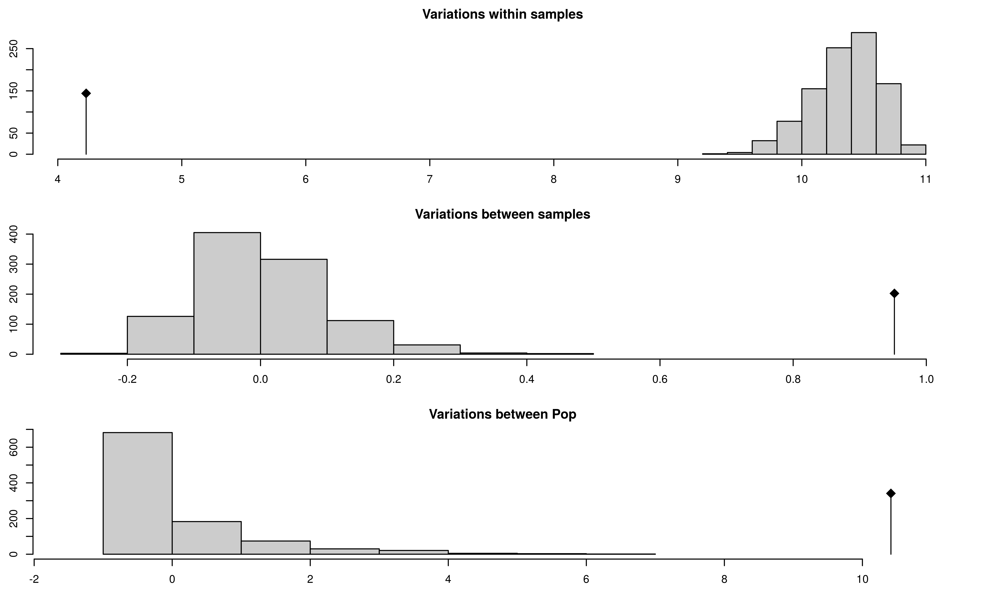

AMOVA
ZN Kamvar, SE Everhart and NJ Grünwald
In this chapter, we will utilize AMOVA to analyze our populations. AMOVA stands for Analysis of MOlecular VAriance and is a method to detect population differentiation utilizing molecular markers [@]. This procedure was initially implemented for DNA haplotypes, but applies to any marker system. The implementation of AMOVA in poppr requires two very basic components: (1) A distance matrix derived from the data and (2) a separate table used to partition the data into different stratifications.
The distance matrix can be calculated using any distance as long as it is euclidean. The distance that is used in the program Arlequin is the opposite of the Kronecker Delta function that counts the number of differences summed over \(L\) loci:
\[ \delta_{l,m} = \begin{cases} 1 \text{ if } m = l,\\ 0 \text{ if } m \neq l \end{cases} \] \[ d_{i,j} = \sum_{L = 1}^L 1 - \delta_{i,j} \]
Data set
To calculate AMOVA in poppr, one simply needs to supply a data set with stratifications. We will use the Aphanomyces euteiches data set from [@].
library("poppr")
data("Aeut")
strata(Aeut) <- data.frame(other(Aeut)$population_hierarchy)
Aeut <- as.genclone(Aeut)
Aeut##
## This is a genclone object
## -------------------------
## Genotype information:
##
## 119 original multilocus genotypes
## 187 diploid individuals
## 56 dominant loci
##
## Population information:
##
## 3 strata - Pop_Subpop, Pop, Subpop
## 2 populations defined - Athena, Mt. VernonWe can see that this data set contains clonal data and has three stratifications where the first is really a combination of the other levels. We can take a look at the different stratifications, populations or subpopulations:
##
## Athena Mt. Vernon
## 97 90## Subpop
## Pop 1 2 3 4 5 6 7 8 9 10
## Athena 9 12 10 13 10 5 11 8 10 9
## Mt. Vernon 10 6 8 12 17 12 12 13 0 0In this example, we have a data set of 187 individuals sampled from two fields located in Athena or Mt. Vernon over 8 or 10 different soil samples within each field. We want to see if most of the variance is observed at the sample, field, or regional level.
Analysis
In panmictic populations, we would expect to see most of the variance arise from within samples. If we see that the most of the variance occurs among samples within populations or among populations, then there is evidence that we have some sort of population structure. In the case of clonal organisms, this would help support a hypothesis of clonal reproduction. Since Aphanomyces eutieches is known to be clonal, we would not expect most of the variance to come from within samples.
Let’s invoke the AMOVA functions with and without clone correction:
Aeutamova <- poppr.amova(Aeut, ~Pop/Subpop)
Aeutamovacc <- poppr.amova(Aeut, ~Pop/Subpop, clonecorrect = TRUE)We’ll look at the AMOVA results for both analyses.
## $call
## ade4::amova(samples = xtab, distances = xdist, structures = xstruct)
##
## $results
## Df Sum Sq Mean Sq
## Between Pop 1 1051.2345 1051.234516
## Between samples Within Pop 16 273.4575 17.091091
## Within samples 169 576.5059 3.411277
## Total 186 1901.1979 10.221494
##
## $componentsofcovariance
## Sigma %
## Variations Between Pop 11.063446 70.006786
## Variations Between samples Within Pop 1.328667 8.407483
## Variations Within samples 3.411277 21.585732
## Total variations 15.803391 100.000000
##
## $statphi
## Phi
## Phi-samples-total 0.7841427
## Phi-samples-Pop 0.2803128
## Phi-Pop-total 0.7000679## $call
## ade4::amova(samples = xtab, distances = xdist, structures = xstruct)
##
## $results
## Df Sum Sq Mean Sq
## Between Pop 1 741.9872 741.987234
## Between samples Within Pop 16 185.6877 11.605483
## Within samples 123 520.1123 4.228555
## Total 140 1447.7872 10.341337
##
## $componentsofcovariance
## Sigma %
## Variations Between Pop 10.4131525 66.777680
## Variations Between samples Within Pop 0.9520545 6.105355
## Variations Within samples 4.2285550 27.116965
## Total variations 15.5937620 100.000000
##
## $statphi
## Phi
## Phi-samples-total 0.7288303
## Phi-samples-Pop 0.1837727
## Phi-Pop-total 0.6677768The first thing to look at are the $results element. The degrees of freedom (the Df column) should match what we expect from our (not clone-corrected) data. The number in the Total row should equal 186 or \(N - 1\), where values are calculated from pooled data. Note that here, “samples” actually refers to subpopulations since we cannot asses within-sample variance of dominant data.
The $componentsofcovariance table shows how much variance is detected at each stratification. We expect variations within samples to give the greatest amount of variation for populations that are not significantly differentiated. Sigma represents the variance, \(\sigma\), for each hierarchical level and to the right is the percent of the total.
Finally, $statphi provides the \(\phi\) population differentiation statistics. These are used to test hypotheses about population differentiation. We would expect a higher \(\phi\) statistic to represent a higher amount of differentiation.
Note, if you want to make a table of any of these components, you can isolate them by using the $ operator and then export it to a table with write.table. Here’s an example with the components of covariance:
Significance testing
To test if populations are significantly different, we perform a randomization test using the function randtest() from the ade4 package. This will randomly permute the sample matrices as described in [@].
set.seed(1999)
Aeutsignif <- randtest(Aeutamova, nrepet = 999)
Aeutccsignif <- randtest(Aeutamovacc, nrepet = 999)
## class: krandtest lightkrandtest
## Monte-Carlo tests
## Call: randtest.amova(xtest = Aeutamova, nrepet = 999)
##
## Number of tests: 3
##
## Adjustment method for multiple comparisons: none
## Permutation number: 999
## Test Obs Std.Obs Alter Pvalue
## 1 Variations within samples 3.411277 -31.902575 less 0.001
## 2 Variations between samples 1.328667 20.986193 greater 0.001
## 3 Variations between Pop 11.063446 9.120263 greater 0.001From this output, you can see three histograms representing the distribution of the randomized strata. The black line represents the observed data. You can see a table of observed results in the output showing that there is significant population structure considering all levels of the population strata. Of course, this could be due to the presence of clones, so let’s visualize the results from the clone corrected data set below:

## class: krandtest lightkrandtest
## Monte-Carlo tests
## Call: randtest.amova(xtest = Aeutamovacc, nrepet = 999)
##
## Number of tests: 3
##
## Adjustment method for multiple comparisons: none
## Permutation number: 999
## Test Obs Std.Obs Alter Pvalue
## 1 Variations within samples 4.2285550 -22.250873 less 0.001
## 2 Variations between samples 0.9520545 9.821081 greater 0.001
## 3 Variations between Pop 10.4131525 9.983940 greater 0.001The above graphs show significant population differentiation at all levels given that the observed \(\phi\) does not fall within the distribution expected from the permutation. Compare the results of our AMOVA analysis to those published in [@]. They should be identical.
Randomized population structure
Since AMOVA is used to detect whether or not there is significant population structure, we can see what happens when we randomly shuffle the population assignments in our data. Here we will show what the populations look like before and after shuffling:
## Pop Subpop
## 001 Athena 1
## 002 Athena 1
## 003 Athena 1
## 004 Athena 1
## 005 Athena 1
## 006 Athena 1## Pop Subpop
## 078 Athena 8
## 066 Athena 7
## 009 Athena 1
## 053 Athena 5
## 101 Mt. Vernon 1
## 176 Mt. Vernon 8Here we see that the populations are completely shuffled, so in the next step, we will reassign the strata with these newly shuffled populations and rerun the AMOVA analysis.
set.seed(9001)
strata(Aeut.new) <- strata(Aeut)[sample(nInd(Aeut)), -1]
Aeut.new.amova <- poppr.amova(Aeut.new, ~Pop/Subpop)
Aeut.new.amova## $call
## ade4::amova(samples = xtab, distances = xdist, structures = xstruct)
##
## $results
## Df Sum Sq Mean Sq
## Between Pop 1 9.61848 9.61848
## Between samples Within Pop 16 191.56812 11.97301
## Within samples 169 1700.01126 10.05924
## Total 186 1901.19786 10.22149
##
## $componentsofcovariance
## Sigma %
## Variations Between Pop -0.0269566 -0.2638108
## Variations Between samples Within Pop 0.1858770 1.8190852
## Variations Within samples 10.0592382 98.4447256
## Total variations 10.2181586 100.0000000
##
## $statphi
## Phi
## Phi-samples-total 0.015552744
## Phi-samples-Pop 0.018142989
## Phi-Pop-total -0.002638108## class: krandtest lightkrandtest
## Monte-Carlo tests
## Call: randtest.amova(xtest = Aeut.new.amova, nrepet = 999)
##
## Number of tests: 3
##
## Adjustment method for multiple comparisons: none
## Permutation number: 999
## Test Obs Std.Obs Alter Pvalue
## 1 Variations within samples 10.0592382 -0.7192877 less 0.219
## 2 Variations between samples 0.1858770 0.7365473 greater 0.233
## 3 Variations between Pop -0.0269566 -0.2131293 greater 0.421
We see that there now is no significant population structure.
Conclusions
AMOVA is a powerful tool that can help support hypotheses of population structure due to clonal reproduction or isolation without making assumptions about Hardy-Weinberg equilibrium. We have shown that we can reject the \(H_o\) of random mating between the two populations and have strong evidence that these populations are significantly differentiated at all stratifications [@]. From these results, we can investigate hypotheses as to why these populations are significantly differentiated.
This example was performed with a data set of dominant (AFLP) markers, but it can also be performed on codominant markers such as SNPs or SSRs. These provide more information because within sample (individual) variance is also assessed. If one wants to utilize a genetic distance that has biological relevance, a different distance matrix can be chosen. See help('amova', package = 'poppr') for more details.